Using Project Boards
What is a project board?
A project board is a tool that helps you plan, track, and manage a piece of work. The Kanban Board is a type of project board. It is visually similar to a Microsoft Teams Planner board, it’s made up of columns and cards:
- Columns represent stages of work, e.g., To Do, In Progress, Done
- Cards represent tasks. These can be issues, pull requests, or notes.
Project boards connect directly to your GitHub repository. That means:
- When someone opens an issue, you can add it to the board as a card.
- When a pull request is opened or merged, the card can move automatically.
- Everyone on the team sees the same board, so it’s easy to collaborate.
Setting up a Project Board
To set up a GitHub project board, navigate to “Projects” within your repo:
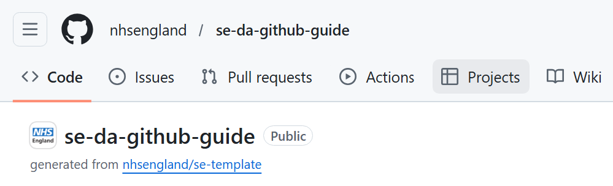
Select ‘New Project’. You can choose a template to follow (e.g., Kanban board or Roadmap) or you can start from scratch. Here is an example of an empty project board using the Kanban template:
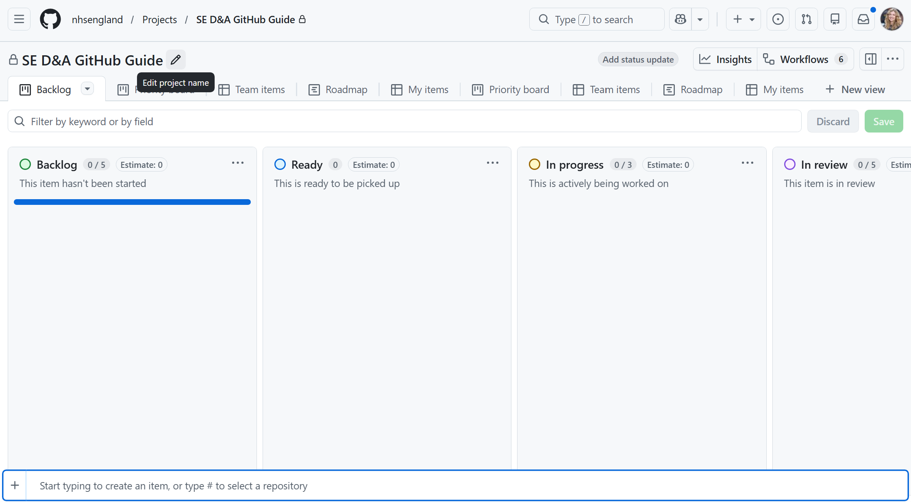
You can rename your project board by clicking “Edit project name”. Here you can also give the project a description and update the ReadMe.
Set the repository as the “Default Repository”. This will link all cards directly to the repository.
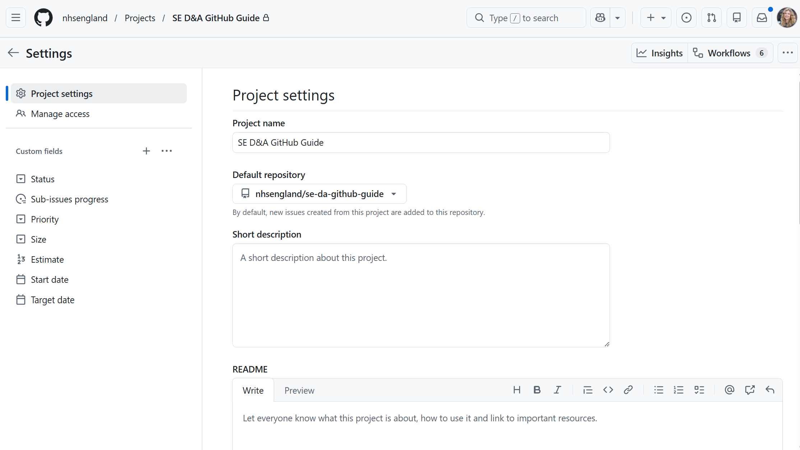
By default, only users who have access to the repo can access the project board. If in doubt, you can check the project settings.
Using your Project Board
The Kanban project board template has the following columns:
- Backlog: items that haven’t yet started
- Ready: items ready to be picked up
- In progress: items being actively worked on
- In review: items currently being reviewed
- Done: items that have been completed
Editing the template
You can edit column names and descriptions, hide or delete columns or reorder the columns by clicking the three dots in the top-right:
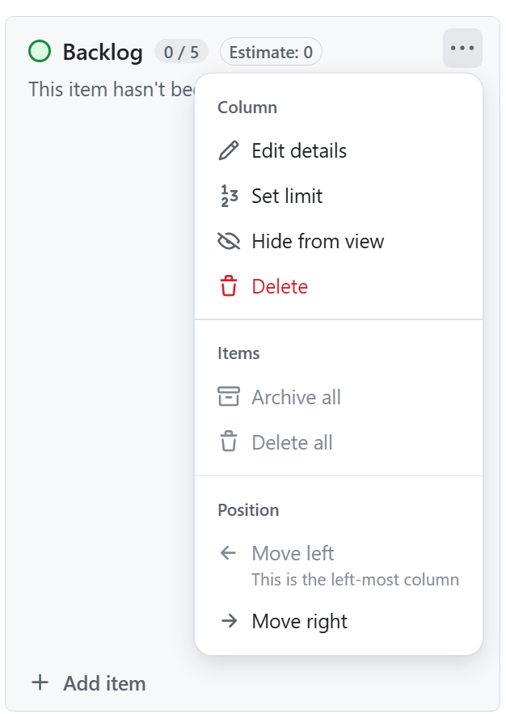
Adding cards
Use the “Add item” button at the bottom of each column to create a new card. Either click the “+” or start typing and select “Create new issue”. Click “Blank issue” to create an issue without a template. For a new issue you can:
- Name the card and add a description
- Assign someone (including yourself) to do the work
- Add labels and issue types, including priority labels
You can also add a card that links to an existing issue.
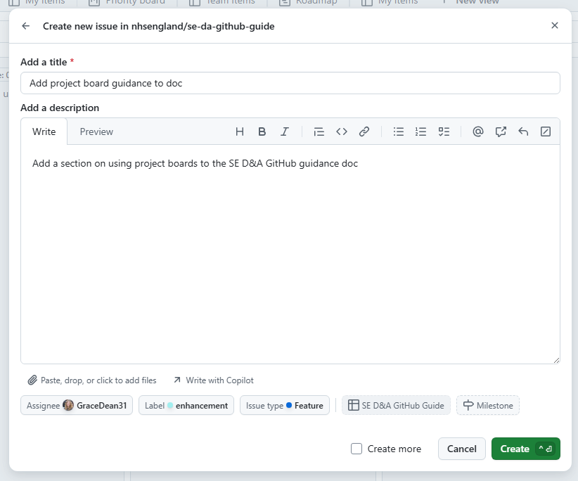
The more detail you can add to a card, the better!
Extra features
Sub-issues
You can create a series of sub-issues related to a card:
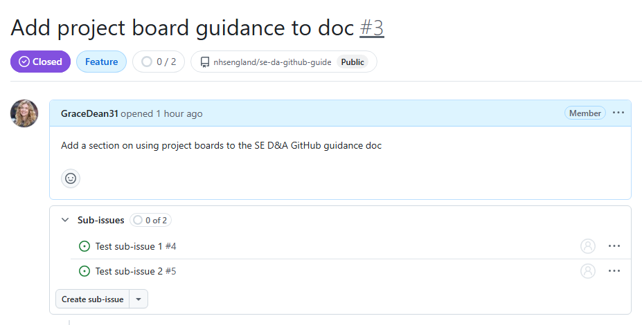
A new card is created for each sub-issue. This means you can assign different team members (or yourself) to different sub-issues and track progress separately.
Relationships
The ‘Relationships’ section on each card shows you which issues and sub-issues are related:
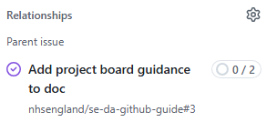
You can also see progress of the sub-issues on the parent issue:
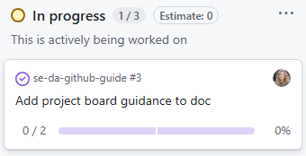
Blocking
You can set a sub-issue as ‘blocked’ by clicking the ‘Settings’ cog next to ‘Relationships’:
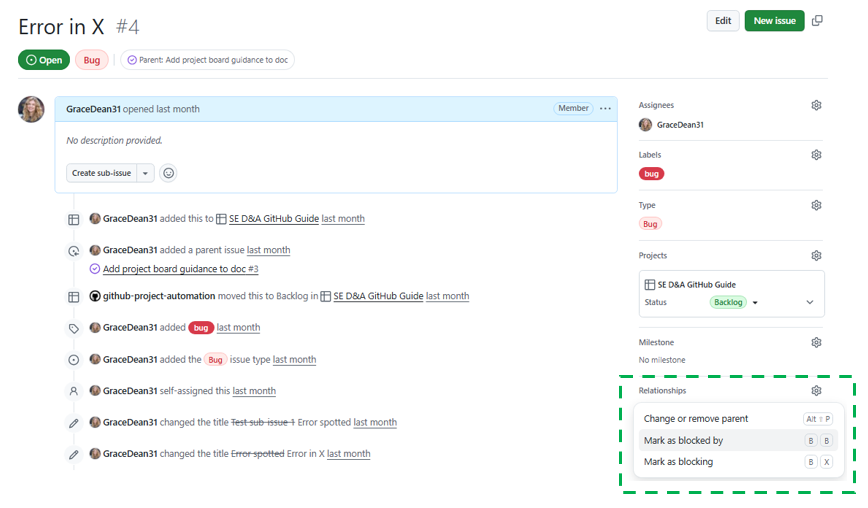
This will then show as ‘blocked’ on the parent issue:
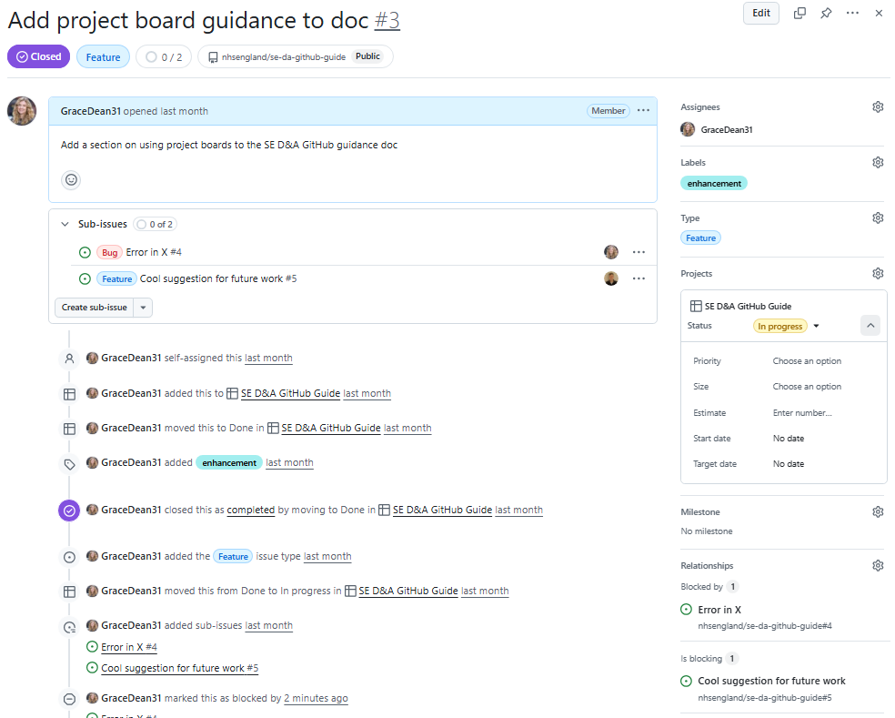
Linking to a branch
You can either:
- Create a new branch that will be linked directly to the issue
- Link the issue to an existing branch
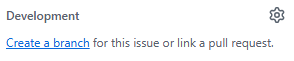
This makes it quick & easy navigate to the pull request for the branch, track progress during QA and see any comments written before the branch was merged into main. When the branch is merged with main, the linked card will automatically move to the “Done” column if the appropriate GitHub Workflow is set up (normally is by default). You can also create different branches for each sub-issue, allowing you to assign different team members and track progress separately.
Notifications
You will automatically receive notifications for any cards you are assigned too. You can unsubscribe or customise your notifications.
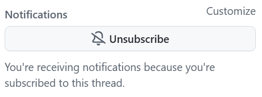